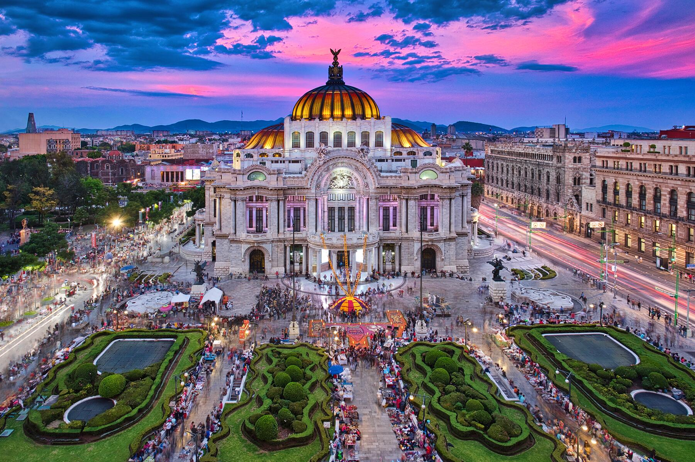

Explora sitios históricos, lugares románticos y algunos de los otros singulares lugares que convierten a Tokio en una ciudad tan especial. Echa un vistazo a nuestra guía turística de Tokio, y conoce nuestras recomendaciones sobre sitios famosos y lugares que no debes perderte. Desde sitios históricos al Tokio del futuro, hay un sinfín de posibilidades para ver y hacer. |
final por persona MXN$ 47,451 MXN$ 40,858 Final 2 personas MXN$ 81,716 Incluye impuestos, tasas y cargos |
Explora sitios históricos, lugares románticos y algunos de los otros singulares lugares que convierten a Busan en una ciudad tan especial y llena de energia. Echa un vistazo a nuestra guía turística de Busan, y conoce nuestras recomendaciones sobre sitios famosos y lugares que no debes perderte. Desde sitios históricos al Busan del futuro, hay un sinfín de posibilidades para ver y hacer. |
final por persona MXN$ 47,451 MXN$ 40,858 Final 2 personas MXN$ 81,716 Incluye impuestos, tasas y cargos |
|  | Explora sitios históricos, lugares románticos y algunos de los otros singulares lugares que convierten a la Ciudad de Mexico en una ciudad tan especial. Echa un vistazo a nuestra guía turística de la Ciudad de Mexico, y conoce nuestras recomendaciones sobre sitios famosos y lugares que no debes perderte. Desde sitios históricos al la Ciudad de Mexico del futuro, hay un sinfín de posibilidades para ver y hacer. |
final por persona MXN$ 47,451 MXN$ 40,858 Final 2 personas MXN$ 81,716 Incluye impuestos, tasas y cargos |